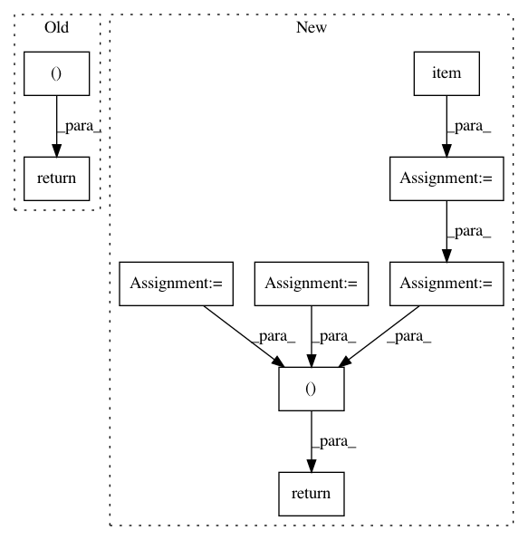

82833059b7ee72896c07489bfc0369079ccedd77,algo/ppo.py,PPO,update,#PPO#,31
Before Change
self.max_grad_norm)
self.optimizer.step()
return value_loss, action_loss, dist_entropy
After Change
value_loss_epoch = 0
action_loss_epoch = 0
dist_entropy_epoch = 0
for e in range(self.ppo_epoch):
if hasattr(self.actor_critic, "gru"):
data_generator = rollouts.recurrent_generator(
advantages, self.num_mini_batch)
else:
data_generator = rollouts.feed_forward_generator(
advantages, self.num_mini_batch)
for sample in data_generator:
observations_batch, states_batch, actions_batch, \
return_batch, masks_batch, old_action_log_probs_batch, \
adv_targ = sample
// Reshape to do in a single forward pass for all steps
values, action_log_probs, dist_entropy, states = self.actor_critic.evaluate_actions(
observations_batch, states_batch,
masks_batch, actions_batch)
ratio = torch.exp(action_log_probs - old_action_log_probs_batch)
surr1 = ratio * adv_targ
surr2 = torch.clamp(ratio, 1.0 - self.clip_param,
1.0 + self.clip_param) * adv_targ
action_loss = -torch.min(surr1, surr2).mean()
value_loss = (return_batch - values).pow(2).mean()
self.optimizer.zero_grad()
(value_loss * self.value_loss_coef + action_loss -
dist_entropy * self.entropy_coef).backward()
nn.utils.clip_grad_norm_(self.actor_critic.parameters(),
self.max_grad_norm)
self.optimizer.step()
value_loss_epoch += value_loss.item()
action_loss_epoch += action_loss.item()
dist_entropy_epoch += dist_entropy.item()
num_updates = self.ppo_epoch * self.num_mini_batch
value_loss_epoch /= num_updates
action_loss_epoch /= num_updates
dist_entropy_epoch /= num_updates
return value_loss_epoch, action_loss_epoch, dist_entropy_epoch
In pattern: SUPERPATTERN
Frequency: 3
Non-data size: 9
Instances
Project Name: ikostrikov/pytorch-a2c-ppo-acktr
Commit Name: 82833059b7ee72896c07489bfc0369079ccedd77
Time: 2018-05-21
Author: ikostrikov@gmail.com
File Name: algo/ppo.py
Class Name: PPO
Method Name: update
Project Name: jadore801120/attention-is-all-you-need-pytorch
Commit Name: 15b19130a9162feb9153a2f38c5c8b0af02c6a1d
Time: 2018-08-21
Author: yhhuang@nlg.csie.ntu.edu.tw
File Name: train.py
Class Name:
Method Name: train_epoch
Project Name: jadore801120/attention-is-all-you-need-pytorch
Commit Name: 15b19130a9162feb9153a2f38c5c8b0af02c6a1d
Time: 2018-08-21
Author: yhhuang@nlg.csie.ntu.edu.tw
File Name: train.py
Class Name:
Method Name: eval_epoch